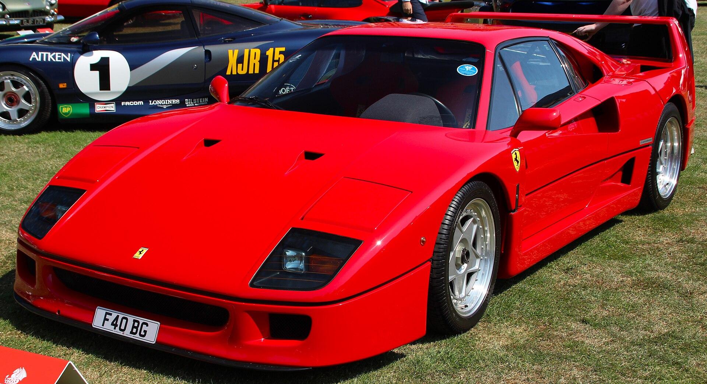

OFFICIAL / PORSCHE
포르쉐는 미래에도
포르쉐일 수 있을까.
새로운 비전 모델 Mission S. 브랜드의 다음 디자인 언어와 미드 엔진 슈퍼스포츠카 플랫폼이 향하는 곳.


새로운 발표를 빠르게 읽고,
왜 중요한지도 알아보세요.
새로운 비전 모델 Mission S. 브랜드의 다음 디자인 언어와 미드 엔진 슈퍼스포츠카 플랫폼이 향하는 곳.
BMW Concept 7 Protection: 7시리즈의 익숙한 외관에 통합된 방호 콘셉트.
BMW 공식 발표 ↗해외 뉴스는 발행처의 원문 제목입니다. 한국어 분석 기사는 사실 관계를 확인한 뒤 따로 발행합니다.
1963년에서 오늘까지.
911의 실루엣이 한 가지 언어로 남는 이유.
기술을 전하고, 형태를 읽고, 문화를 기록합니다.
처음으로